CODING AGENTS AS PIXEL WORLD MODELS
traex/DeepSeek-V4.1-Flash · 0028
点击播放 · 原生 RGB 像素
逐轮保存的候选
回放视频、检查图与代码变化。
每份候选均可单独播放。实际图片检查记录在下方工具轨迹中。
候选 01播放与检查图
点击播放 · 原生 RGB 像素

展开代码变化
--- 上一保存版本
+++ 本次保存版本
@@ -0,0 +1,195 @@
+from pathlib import Path
+
+import cv2
+import numpy as np
+from PIL import Image, ImageDraw, ImageFilter
+
+import artifact_io
+
+
+CASE_DIR = Path(__file__).resolve().parent
+WIDTH, HEIGHT = 256, 144
+FPS = 4
+FRAME_COUNT = 20
+SCALE = 4
+
+
+def circle_alpha(size, radius, feather=1.1):
+ yy, xx = np.mgrid[:size, :size]
+ center = (size - 1) / 2
+ distance = np.hypot(xx - center, yy - center)
+ return np.clip((radius + feather * 0.5 - distance) / feather, 0.0, 1.0)
+
+
+def extract_ball(image, center, radius, crop_radius=13):
+ x, y = center
+ size = crop_radius * 2 + 1
+ left = round(x) - crop_radius
+ top = round(y) - crop_radius
+ patch = np.asarray(image.crop((left, top, left + size, top + size))).astype(np.float32)
+ alpha = circle_alpha(size, radius)
+ return patch, alpha, (round(x) - left, round(y) - top)
+
+
+def prepare_ball_sprite(ball, scale=SCALE):
+ patch, alpha, _ = ball
+ size = patch.shape[0]
+ rgb = Image.fromarray(np.uint8(np.clip(patch, 0, 255)))
+ low = np.asarray(rgb.filter(ImageFilter.GaussianBlur(radius=4.2))).astype(np.float32)
+ high = patch - low
+ rgb_high = Image.fromarray(
+ np.uint8(np.clip(high + 128.0, 0, 255)),
+ mode="RGB",
+ )
+ alpha_image = Image.fromarray(np.uint8(np.clip(alpha * 255, 0, 255)), mode="L")
+ sprite_size = size * scale
+ low_big = rgb.resize((sprite_size, sprite_size), Image.Resampling.BICUBIC)
+ high_big = rgb_high.resize((sprite_size, sprite_size), Image.Resampling.BICUBIC)
+ alpha_big = alpha_image.resize((sprite_size, sprite_size), Image.Resampling.BICUBIC)
+ return low_big, high_big, alpha_big
+
+
+def ball_sprite(sprite, angle):
+ low, high, alpha = sprite
+ rotated_high = high.rotate(
+ angle,
+ resample=Image.Resampling.BICUBIC,
+ center=(high.width / 2, high.height / 2),
+ )
+ detail = np.asarray(rotated_high).astype(np.float32) - 128.0
+ base = np.asarray(low).astype(np.float32)
+ rgb = Image.fromarray(np.uint8(np.clip(base + detail, 0, 255)), mode="RGB")
+ return rgb, alpha
+
+
+def make_static_plate(image):
+ source = np.asarray(image).copy()
+ mask = np.zeros((HEIGHT, WIDTH), dtype=np.uint8)
+
+ # Cover both the spheres and their low, directional cast shadows.
+ cv2.ellipse(mask, (125, 45), (15, 14), 0, 0, 360, 255, -1)
+ cv2.ellipse(mask, (125, 55), (19, 7), 0, 0, 360, 255, -1)
+ cv2.ellipse(mask, (180, 43), (29, 16), 0, 0, 360, 255, -1)
+ cv2.ellipse(mask, (183, 53), (31, 8), 0, 0, 360, 255, -1)
+
+ plate = cv2.inpaint(
+ cv2.cvtColor(source, cv2.COLOR_RGB2BGR),
+ mask,
+ 4,
+ cv2.INPAINT_TELEA,
+ )
+ plate = cv2.cvtColor(plate, cv2.COLOR_BGR2RGB)
+
+ # A restrained grain reconstruction keeps the inpainted regions from
+ # looking flat at 4x presentation scale.
+ rng = np.random.default_rng(28)
+ noise = rng.normal(0.0, 1.15, (HEIGHT, WIDTH, 1))
+ softened_mask = cv2.GaussianBlur(mask, (0, 0), 1.8).astype(np.float32)[..., None] / 255.0
+ plate = np.clip(plate.astype(np.float32) + noise * softened_mask, 0, 255)
+ return Image.fromarray(np.uint8(plate), mode="RGB")
+
+
+def shadow_layer(positions, radii):
+ canvas = Image.new("L", (WIDTH * SCALE, HEIGHT * SCALE), 0)
+ draw = ImageDraw.Draw(canvas)
+ for (x, y), radius in zip(positions, radii):
+ cx, cy = x * SCALE, y * SCALE
+ r = radius * SCALE
+ draw.ellipse(
+ (cx - 1.25 * r, cy + 0.22 * r, cx + 1.55 * r, cy + 0.74 * r),
+ fill=95,
+ )
+ draw.ellipse(
+ (cx - 0.78 * r, cy + 0.72 * r, cx + 0.92 * r, cy + 0.98 * r),
+ fill=120,
+ )
+ return canvas.filter(ImageFilter.GaussianBlur(radius=2.0 * SCALE))
+
+
+def paste_ball(frame, sprite, center, angle):
+ rgb, alpha = ball_sprite(sprite, angle)
+ x, y = center
+ left = round(x * SCALE) - rgb.width // 2
+ top = round(y * SCALE) - rgb.height // 2
+ frame.paste(rgb, (left, top), alpha)
+
+
+def main():
+ first = Image.open(CASE_DIR / "first_frame.png").convert("RGB")
+ first_array = np.asarray(first)
+ plate = make_static_plate(first)
+ plate_big = plate.resize((WIDTH * SCALE, HEIGHT * SCALE), Image.Resampling.LANCZOS)
+
+ specs = [
+ ((124.5, 45.5), 10.2),
+ ((171.5, 42.8), 9.7),
+ ((186.4, 41.8), 9.7),
+ ]
+ balls = [extract_ball(first, center, radius) for center, radius in specs]
+ sprites = [prepare_ball_sprite(ball) for ball in balls]
+
+ grey_start = np.array(specs[0][0], dtype=np.float64)
+ brown_start = np.array(specs[1][0], dtype=np.float64)
+ orange_start = np.array(specs[2][0], dtype=np.float64)
+ grey_radius, brown_radius, orange_radius = (spec[1] for spec in specs)
+
+ grey_speed = 12.5
+ motion_start = 0.14
+ contact_radius = grey_radius + brown_radius - 0.15
+ dy = grey_start[1] - brown_start[1]
+ horizontal_at_contact = np.sqrt(contact_radius**2 - dy**2)
+ grey_contact = brown_start - np.array([horizontal_at_contact, -dy])
+ contact_time = motion_start + (grey_contact[0] - grey_start[0]) / grey_speed
+
+ impact_angle = np.arctan2(brown_start[1] - grey_contact[1], brown_start[0] - grey_contact[0])
+ impact_direction = np.array([np.cos(impact_angle), np.sin(impact_angle)])
+ brown_speed = 2.35
+ orange_speed = 2.75
+
+ frames = []
+ for frame_index in range(FRAME_COUNT):
+ if frame_index == 0:
+ frames.append(first_array.copy())
+ continue
+
+ time = frame_index / FPS
+ grey = grey_start.copy()
+ if time > motion_start:
+ grey[0] = min(grey_contact[0], grey_start[0] + grey_speed * (time - motion_start))
+ grey_travel = grey[0] - grey_start[0]
+
+ brown = brown_start.copy()
+ orange = orange_start.copy()
+ brown_travel = 0.0
+ orange_travel = 0.0
+ if time > contact_time:
+ post_time = time - contact_time
+ brown_travel = brown_speed * post_time
+ orange_travel = orange_speed * post_time
+ brown += impact_direction * brown_travel
+ orange += impact_direction * orange_travel
+
+ frame = plate_big.copy()
+ positions = [tuple(grey), tuple(brown), tuple(orange)]
+ radii = [grey_radius, brown_radius, orange_radius]
+ shadows = shadow_layer(positions, radii)
+ shadow_rgb = Image.new("RGB", frame.size, (56, 51, 46))
+ frame = Image.composite(shadow_rgb, frame, shadows)
+
+ angles = [
+ -np.degrees(grey_travel / grey_radius),
+ -np.degrees(brown_travel / brown_radius),
+ -np.degrees(orange_travel / orange_radius),
+ ]
+ for sprite, center, angle in zip(sprites, positions, angles):
+ paste_ball(frame, sprite, center, angle)
+
+ frame = frame.resize((WIDTH, HEIGHT), Image.Resampling.LANCZOS)
+ frames.append(np.asarray(frame).copy())
+
+ frames = np.stack(frames).astype(np.uint8)
+ artifact_io.save(frames, CASE_DIR)
+
+
+if __name__ == "__main__":
+ main()
候选 02播放与检查图
点击播放 · 原生 RGB 像素
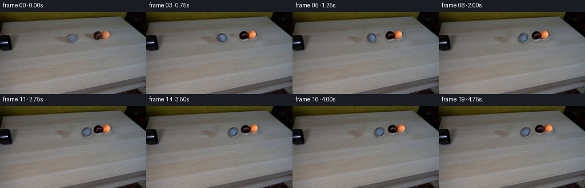
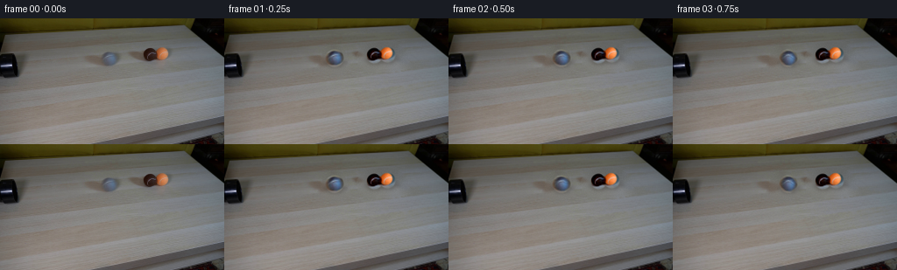
展开代码变化
--- 上一保存版本
+++ 本次保存版本
@@ -21,27 +21,26 @@
return np.clip((radius + feather * 0.5 - distance) / feather, 0.0, 1.0)
-def extract_ball(image, center, radius, crop_radius=13):
+def extract_ball(image, center, radius, crop_radius=13, mask_radius=None):
x, y = center
size = crop_radius * 2 + 1
left = round(x) - crop_radius
top = round(y) - crop_radius
patch = np.asarray(image.crop((left, top, left + size, top + size))).astype(np.float32)
- alpha = circle_alpha(size, radius)
+ alpha = circle_alpha(size, radius if mask_radius is None else mask_radius)
return patch, alpha, (round(x) - left, round(y) - top)
-def prepare_ball_sprite(ball, scale=SCALE):
+def prepare_ball_sprite(ball, scale=SCALE, strengthen_detail=1.0):
patch, alpha, _ = ball
size = patch.shape[0]
rgb = Image.fromarray(np.uint8(np.clip(patch, 0, 255)))
low = np.asarray(rgb.filter(ImageFilter.GaussianBlur(radius=4.2))).astype(np.float32)
- high = patch - low
+ high = (patch - low) * strengthen_detail
rgb_high = Image.fromarray(
np.uint8(np.clip(high + 128.0, 0, 255)),
- mode="RGB",
)
- alpha_image = Image.fromarray(np.uint8(np.clip(alpha * 255, 0, 255)), mode="L")
+ alpha_image = Image.fromarray(np.uint8(np.clip(alpha * 255, 0, 255)))
sprite_size = size * scale
low_big = rgb.resize((sprite_size, sprite_size), Image.Resampling.BICUBIC)
high_big = rgb_high.resize((sprite_size, sprite_size), Image.Resampling.BICUBIC)
@@ -58,7 +57,7 @@
)
detail = np.asarray(rotated_high).astype(np.float32) - 128.0
base = np.asarray(low).astype(np.float32)
- rgb = Image.fromarray(np.uint8(np.clip(base + detail, 0, 255)), mode="RGB")
+ rgb = Image.fromarray(np.uint8(np.clip(base + detail, 0, 255)))
return rgb, alpha
@@ -86,7 +85,7 @@
noise = rng.normal(0.0, 1.15, (HEIGHT, WIDTH, 1))
softened_mask = cv2.GaussianBlur(mask, (0, 0), 1.8).astype(np.float32)[..., None] / 255.0
plate = np.clip(plate.astype(np.float32) + noise * softened_mask, 0, 255)
- return Image.fromarray(np.uint8(plate), mode="RGB")
+ return Image.fromarray(np.uint8(plate))
def shadow_layer(positions, radii):
@@ -125,8 +124,16 @@
((171.5, 42.8), 9.7),
((186.4, 41.8), 9.7),
]
- balls = [extract_ball(first, center, radius) for center, radius in specs]
- sprites = [prepare_ball_sprite(ball) for ball in balls]
+ balls = [
+ extract_ball(first, specs[0][0], specs[0][1]),
+ extract_ball(first, specs[1][0], specs[1][1], mask_radius=8.9),
+ extract_ball(first, specs[2][0], specs[2][1], mask_radius=8.9),
+ ]
+ sprites = [
+ prepare_ball_sprite(balls[0], strengthen_detail=1.35),
+ prepare_ball_sprite(balls[1]),
+ prepare_ball_sprite(balls[2]),
+ ]
grey_start = np.array(specs[0][0], dtype=np.float64)
brown_start = np.array(specs[1][0], dtype=np.float64)
可观测工具轨迹
实际执行的命令与返回图片。
命令 1exit 0
/bin/bash -c "pwd && rg --files -g '"'!*__pycache__*'"'"
命令 2exit 0
/bin/bash -c 'cat prompt.txt'
命令 3exit 0
/bin/bash -c 'cat GENERATION_RULES.md'
命令 4exit 0
/bin/bash -c "file first_frame.png && identify first_frame.png 2>/dev/null || true && find . -maxdepth 2 -type f -printf '%p %s bytes\\n' | sort"
命令 5exit 0
/bin/bash -c "sed -n '1,240p' artifact_io.py"
命令 6exit 0
/bin/bash -c "sed -n '1,240p' player_template.html"
命令 7exit 0
/bin/bash -c "python - <<'PY'
from PIL import Image
im=Image.open('first_frame.png')
print(im.mode, im.size)
PY"命令 8exit 0
/bin/bash -c "python - <<'PY'
from PIL import Image
im=Image.open('first_frame.png')
im.crop((90,25,215,75)).resize((750,300),Image.Resampling.NEAREST).save('.tmp/crop.png')
PY"命令 9exit 0
/bin/bash -c "python - <<'PY'
import numpy as np
from PIL import Image
im=np.array(Image.open('first_frame.png'))
# Print rows around ball/table and use variance by row for horizontal table edge
for y in range(0,144,4):
print(y, tuple(im[y,128]), tuple(im[y,220]), tuple(im[y,5]))
PY"命令 10exit 0
/bin/bash -c "python - <<'PY'
try:
import cv2; print('cv2',cv2.__version__)
except Exception as e: print('no cv2',e)
try:
import scipy; print('scipy',scipy.__version__)
except Exception as e: print('no scipy',e)
PY"命令 11exit 0
/bin/bash -c "python - <<'PY'
from PIL import Image,ImageDraw,ImageFont
im=Image.open('first_frame.png').crop((80,15,210,80)).resize((1040,520),Image.Resampling.LANCZOS)
d=ImageDraw.Draw(im)
for x in range(80,211,10):
xx=(x-80)*8; d.line((xx,0,xx,520),fill=(255,0,0),width=1); d.text((xx+2,2),str(x),fill=(255,255,0))
for y in range(15,81,10):
yy=(y-15)*8; d.line((0,yy,1040,yy),fill=(255,0,0),width=1); d.text((2,yy+2),str(y),fill=(255,255,0))
im.save('.tmp/grid.png')
PY"命令 12exit 0
/bin/bash -c 'python generate.py'
命令 13exit 0
/bin/bash -c "python - <<'PY'
from PIL import Image
for i in [0,2,5,8,9,10,11,13,16,19]:
im=Image.open(f'frames/{i:02d}.png')
im.resize((1024,576),Image.Resampling.NEAREST).save(f'.tmp/f{i:02d}.png')
PY"命令 14exit 0
/bin/bash -c "python - <<'PY'
from PIL import Image
import numpy as np
for i in [0,1,8,10,19]:
a=np.array(Image.open(f'frames/{i:02d}.png'))
print(i, a.shape, a[0,128], a[5,128], a[30,5], a[45,5], a[45,124], a[43,172])
PY"命令 15exit 0
/bin/bash -c "python - <<'PY'
from PIL import Image
for i in [0,1,2,4,6,8,10,12,15,19]:
Image.open(f'frames/{i:02d}.png').crop((80,15,210,75)).resize((1040,480),Image.Resampling.LANCZOS).save(f'.tmp/key{i:02d}.png')
PY"命令 16exit 0
/bin/bash -c "python generate.py && python - <<'PY'
from PIL import Image
import numpy as np
orig=np.array(Image.open('first_frame.png'))
made=np.array(Image.open('frames/00.png'))
print('frame0 exact:', np.array_equal(orig,made))
for i in [1,2,4,6,8,10,12,15,19]:
Image.open(f'frames/{i:02d}.png').crop((80,15,210,75)).resize((1040,480),Image.Resampling.LANCZOS).save(f'.tmp/key{i:02d}.png')
PY"命令 17exit 0
/bin/bash -c "ls -lah && find frames -maxdepth 1 -type f | sort | wc -l && python - <<'PY'
from pathlib import Path
import numpy as np
from PIL import Image
z=np.load('pixels.npz')['pixels']
print('pixels',z.shape,z.dtype)
print('frame files',len(list(Path('frames').glob('*.png'))))
print('html bytes',Path('index.html').stat().st_size)
print('unique frame hashes',len({hash(Path(f'frames/{i:02d}.png').read_bytes()) for i in range(20)}))
PY"命令 18exit 0
/bin/bash -c "python - <<'PY'
from pathlib import Path
import json,re
import numpy as np
from PIL import Image
frames=[np.array(Image.open(f'frames/{i:02d}.png').convert('RGB')) for i in range(20)]
assert np.array_equal(frames[0],np.array(Image.open('first_frame.png').convert('RGB')))
assert all(f.shape==(144,256,3) and f.dtype==np.uint8 for f in frames)
assert len({f.tobytes() for f in frames})==20
html=Path('index.html').read_text()
assert 'window.__pixelReady=true' in html and '__DATA__' not in html
# Confirm the grey ball advances left-to-right across the central region.
centers=[]
for f in frames:
crop=f[32:60,90:170].astype(float)
# grey-ish pixels (blue not much lower than red, medium brightness)
m=(crop.mean(2)>55)&(crop.mean(2)<155)&(np.abs(crop[:,:,2]-crop[:,:,0])<30)
ys,xs=np.nonzero(m)
centers.append(round(float(xs.mean()) if len(xs) else -1,2))
print('frame count:',len(frames))
print('frame 00 exact: yes')
print('all frames unique: yes')
print('central ROI mean x by frame:',centers)
print('artifacts: frames/, pixels.npz, index.html, inspection.png, transition_check.png')
PY"视觉工具实际返回图片 1
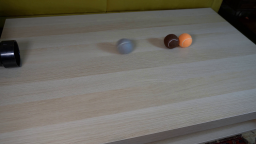
视觉工具实际返回图片 2
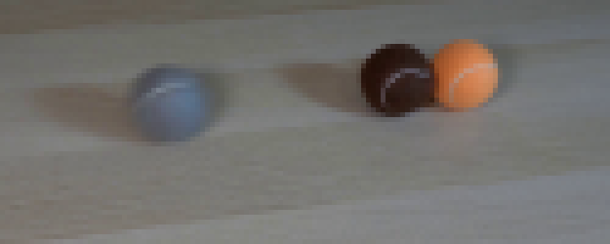
视觉工具实际返回图片 3
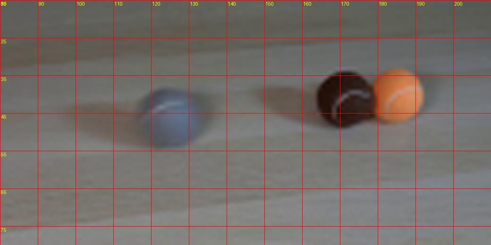
视觉工具实际返回图片 4
视觉工具实际返回图片 5
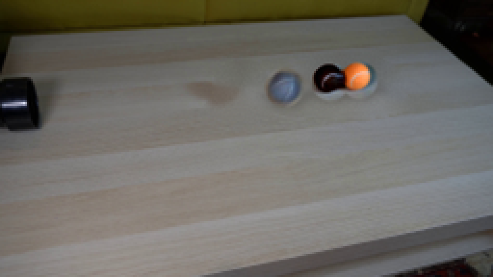
视觉工具实际返回图片 6
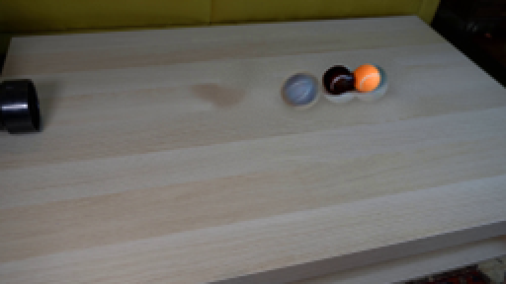
视觉工具实际返回图片 7
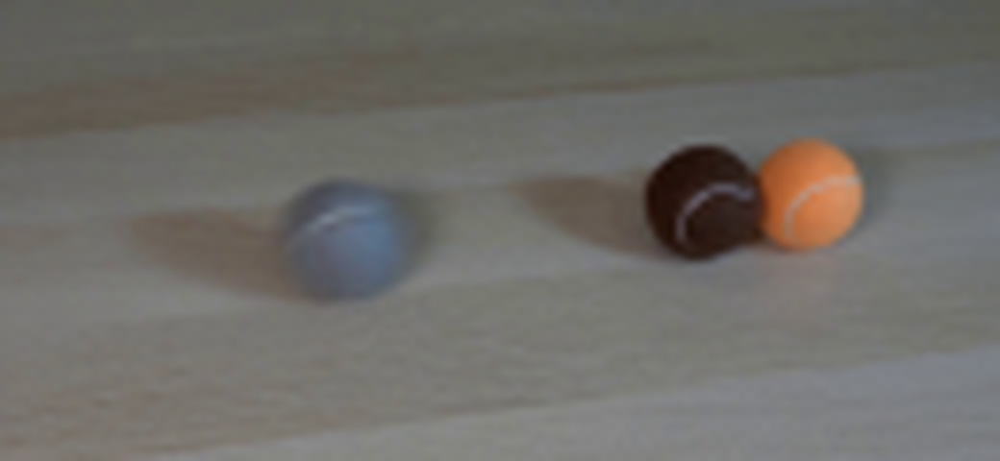
视觉工具实际返回图片 8
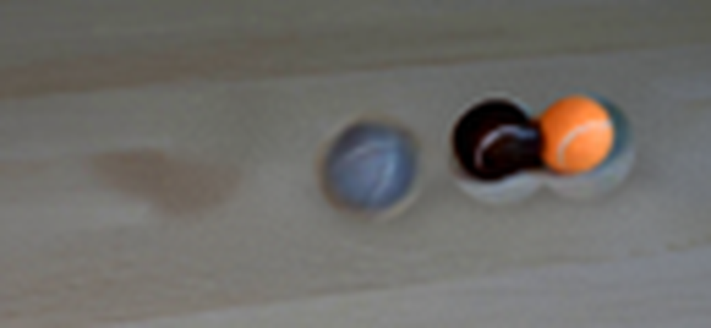
视觉工具实际返回图片 9
视觉工具实际返回图片 10
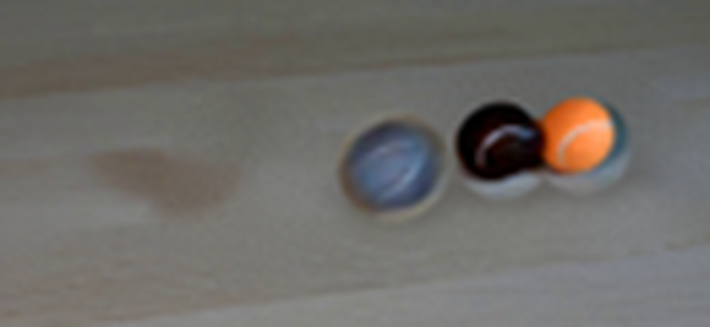
视觉工具实际返回图片 11
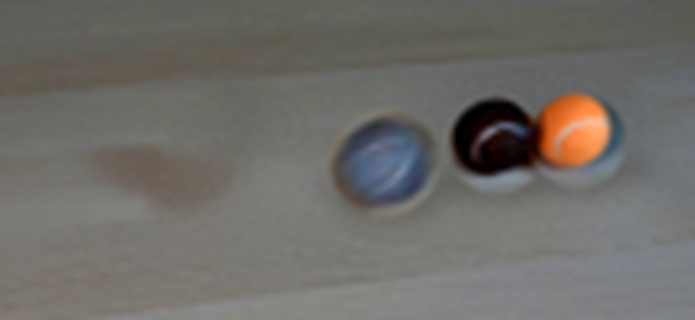
视觉工具实际返回图片 12
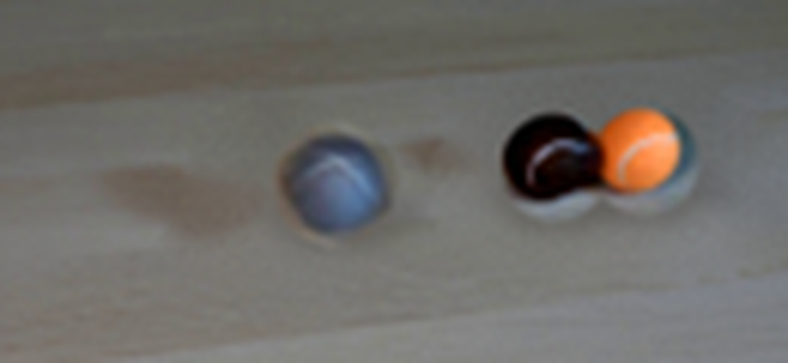
视觉工具实际返回图片 13
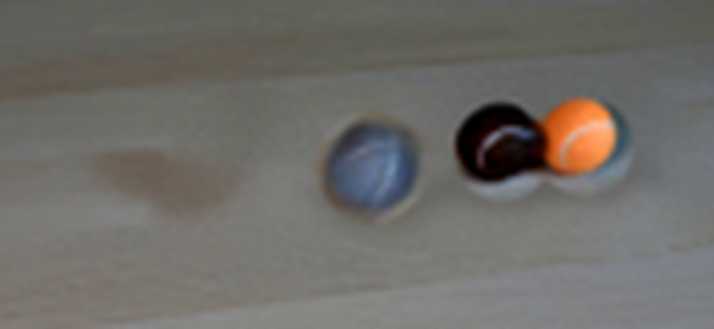
视觉工具实际返回图片 14

视觉工具实际返回图片 15
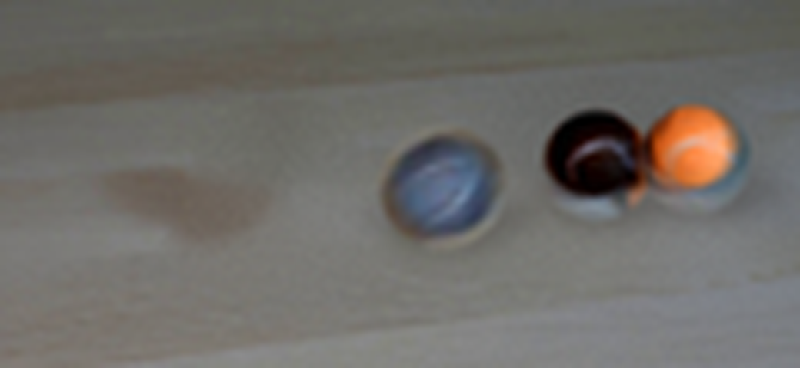
保存候选 2 份；完成命令 18 次；可验证图片返回 15 张。原始 API 响应与完整日志保留在本地。